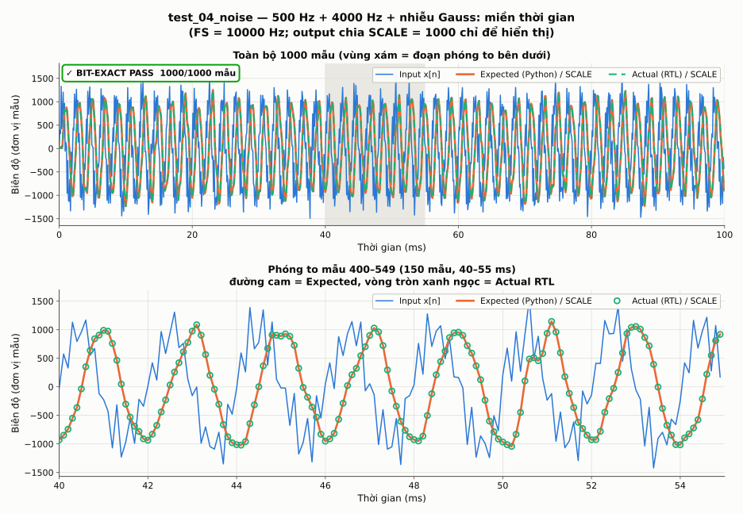
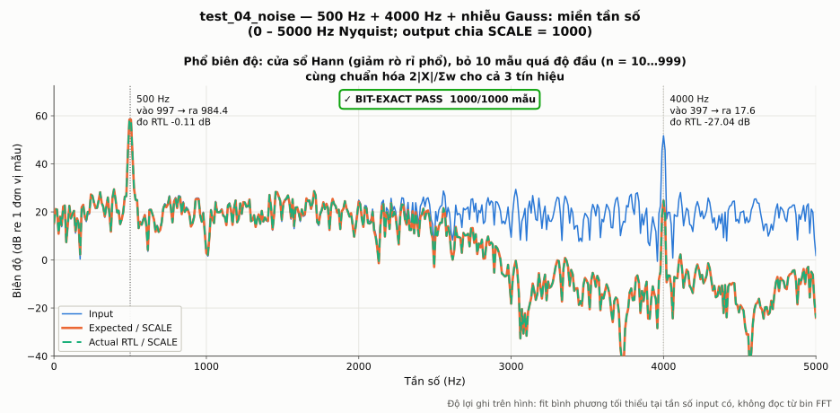
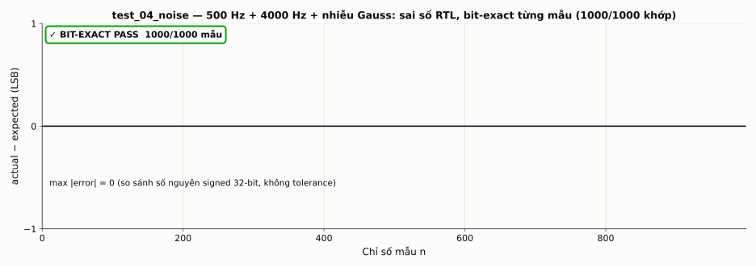

test_04_noise ✓ BIT-EXACT PASS
[test_04_noise] 500 Hz + 4000 Hz + nhiễu Gauss Mẫu kiểm tra : 1000 Khớp / không khớp: 1000 / 0 max |error| : 0 Bit-exact : PASS Gain 500 Hz : đo RTL -0.113 dB (±0.043, 1σ) | đo Expected -0.113 dB | lý thuyết -0.112 dB | A_in=997.31, A_out/SCALE=984.424 Gain 4000 Hz : đo RTL -27.043 dB (±2.376, 1σ) | đo Expected -27.043 dB | lý thuyết -26.995 dB | A_in=396.79, A_out/SCALE=17.637
Miền thời gian

Miền tần số (FFT)

Sai số RTL: actual − expected
